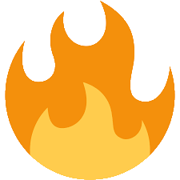

This server is for discussing issues related to anxiety disorders such as OCD, GAD, Social Anxiety, phobias and etc. Those simply dealing with anxiety as a symptom or those who want to know more about it are also welcome. There are plenty of mods and we try to cultivate a positive and supportive environment while still accommodating the need to discuss heavier issues. A lot of effort is directed towards minimizing the kind of drama and toxicity that can eat away at online communities.
Contents

- a. No illegal or NSFL posts. No advocating for any violent acts or those that could be construed as harassment of an individual–if it’s the sort of thing that’s illegal everywhere it’s illegal here.
b. Nothing that violates Discord’s terms of service. That means no NSFW or illegal drug talk. - a. No spamming or flooding channels. (There’s limited exceptions.)
b. No advertising or promotion. (There’s an exception for established members.)
c. No deceptive or manipulative activities such as pretending to be different people. - a. Do not reveal any personal info not volunteered by another member, and do not threaten to reveal that info.
b. Be respectful to each other. Don’t harass with excessive @pings. Do not pick fights and pursue personal vendettas. Any drama between individuals should be addressed elsewhere.
c. Do not use persistent derogatory language directed at individuals for the sole purpose of picking fights.
d. Do not propagate hateful attitudes towards attributes people cannot change. Discussion and disagreement are allowed but don’t make it nasty–make it about ideas, not people. - No evasion of server discipline. There are various levels of discipline that fall short of kicking and banning. This allows us to be more lenient, not less, and if you undermine this system we have no other option but resorting to the more draconian measures.
Getting Verified
Enter:
!ice new
exactly in the #petcetera channel to get your first role. It can take awhile to grant the role, but you’ll get it.
Remember, it’s !ice New
This assigns yourself the New role, giving you the ability to post in the server and join the All voice channels.
If this doesn’t work immediately just wait for a mod to add the role. Don’t give away this command to new people.
The Roles
The New role is the first role. This role can embed links in #sharing-blue and in red zone channels.
Once a New member has behaved well for awhile, they’ll be upgraded to to the Blue role which grants them access to Blue-only text and voice channels.
If a Blue member makes it to level 15, and gets approved, they’ll be granted the Veteran role which grants access to more hidden channels.
In addition to the primary roles, there are smaller roles with specialized purposes:
- Talker role is given to those with an interest in using the voice channels. It gets @role pinged when a voice chat is ongoing.
- Zone role grants access to the
#zone-dangerchannel where really controversial subjects are discussed.

Blue

The Blue Zone channels have a
emoji in the description and there’s an expectation of being more calm and civil. In these channels we try to follow the spirit of the rules and not just the letter of them.
Red
And the Red Zone channels with a emoji in the description are much more permissive. Here we follow the letter of the rules. It’s not lawless, but instead governed by a more libertarian interpretation of the rules.
Purple
The Purple Zone are channels that have specific roles that don’t fit neatly into the Blue/Red scheme. Purple channels have a emoji in their description.
Think of the Blue Zone as where we do the work, and the Red Zone is where we put our troubles and conflicts aside in order to do the work of the Blue Zone. If someone keeps posting things that aren’t suitable for
the channels then they could be limited to only
channels. We want everyone here to get along as best as possible, and channel guidelines will help make our interactions as smooth as possible.
Blue Zone
#newbie_lobbyis where new members talk and get familiar with the server.
#blue_lounge is the general, chill discussion channel.
#advice- channels have two different types:
Health
Work, school, relationships, friends and family. Ask questions about simplifying life, fighting addictions, and learning new skills. Also for self-help stuff like meditation, yoga, or anything “life hack”-like.
Life
The health advice channel is for discussion of medication, health, diets and exercise, and psychology.
#sharing- channels are like feeds for media such as pictures/videos/etc.
Cheer
#sharing-cheer is for positive affirmation, progress reports, and general feel-good stuff.
Blue
#sharing-blue is for music, videos, art, articles, interests, hobbies–if you want to share it then can share it here.
Red
#sharing-red is where edgier / heavier content gets shared.
Red Zone
#red_lounge is similar to its Blue Zone counterpart, with an emphasis on games, music, and media.
#support- channels are where users get various kinds of support for their issues. The two kinds of support channels are vent and talk:
Vent
Vent is for getting things off your chest. The expectation in this channel is a much more one-sided kind of “venting” where you put a lot of stuff into one large post
Talk
Talk is for talking about problems. This type of support channel favors a more conversational style. It’s like a midway point between a #support-vent and #advice-life channel.
#zone- channels are for politics, religion, memes, etc. The danger zone is for politics/religion stuff. Users are still expected to keep things civil here. These can’t be accessed unless you have the Zone role.
Purple Zone
#petcetera is for various things that don’t fit in elsewhere.
#directory- are for for single post, short profiles.
Profiles
#directory-profiles are short, one-post profile posts that serve just as introductions to the community. They’re optional and you only share relevant things that you want to share.
Gaming
#directory-gaming serves to help people find others who play the same games. List what games you play using the full title of each game. Using abbreviatiated or slang terms will make the channel too hard to search.
#voice- text channels are for those in corresponding voice channels.
 Queue channel is where users who need to be dragged into a channel wait. There are enough mods to handle everyone so you don’t have to wait long.
Queue channel is where users who need to be dragged into a channel wait. There are enough mods to handle everyone so you don’t have to wait long.
 All
and
All
and
 All II channels work for everyone but have a limit of 6 users. (Mods can drag people in over this limit.)
All II channels work for everyone but have a limit of 6 users. (Mods can drag people in over this limit.)
 Danger Phone is the voice channel for the
Danger Phone is the voice channel for the #zone-danger text channel.
 Discreet channel has a limit of three people and is for more private discussions.
Discreet channel has a limit of three people and is for more private discussions.
 Support channel is where people talk about issues related to the
Support channel is where people talk about issues related to the #support- text channels.
 Support II is just like
Support except limited to two people.
Support II is just like
Support except limited to two people.
 Blue-Only channel is for Blue and higher users.
Blue-Only channel is for Blue and higher users.
 Ham,
BURN-E and
Ham,
BURN-E and
 Human Radio are the radio channels. Human radio is for user streams without a bot.
Human Radio are the radio channels. Human radio is for user streams without a bot.
Server Advice
A note about blocking
If you’re blocked by someone or suspect it, do not ask in the main server. This policy follows from rule 3.b.
When someone is accused of blocking publicly it creates a situation where the fairness of the block is called into question, and then there are two people who have to defend their reputations, and then the entire server is thrown off-topic to argue an unrelated personal dispute. This server is for those hoping to avoid such drama. Do not PM multiple mods or other users in an attempt to get them to bother whoever blocked you. Such action violates rule 3.b as well.
How to talk to us
If you need to talk to the owner or a mod, ask us in the server and we’ll initiate the conversation. Do not PM us. Ask the mods to add you to a hidden channel and you can talk there.
Be careful with selfies and other camera uploads
It’s very easy to reverse image search an image to link back to someone’s online profile and leak information you want private. There’s personal info in the metadata of photos. We strongly advise that users share selfies over direct messages. This isn’t a hard rule but it’s something that is strongly advised.
Direct Messages
It’s been standard practice here for mods to DM people only when necessary and to deal with support in server. This is a bigger server, and anyone can to get overloaded by DM support requests. Please do not send people DMs unless it’s necessary.
Working together in the server itself allows people to share the burden. If you want to talk with just mods or anyone else, that can be done on a hidden channel.
Because of this, in the future we’d like to see all high profile members treated the same as staff in regards to DMs.
Use our DiscordMe link instead of invites :).
Safety Warnings
Do not open any .exe files or links sent to you in PM from random users. There’s nasty people out there who send viruses and trojans this way.
If you are being spammed by PMs, it’s a good idea to change your server privacy settings to block them:
- Open the server menu
- Select Privacy Settings
- Un-check Allow direct messages from server users
- Click Done